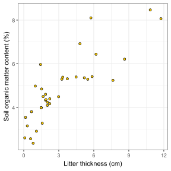
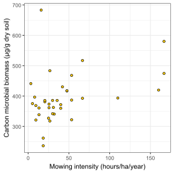
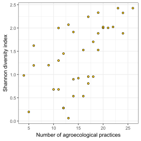
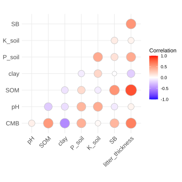

![]()
Show me the code
install.packages("ggcorrplot")In this tutorial, you will investigate associations between numerical variables using correlation analysis. You will work with pairs of variables that may be continuous, discrete, or show non-linear relationships, and you will learn how to choose an appropriate correlation method for each situation. Specifically, you will calculate and interpret three commonly used correlation measures:
Pearson’s correlation: used when both variables are continuous and the relationship is approximately linear.
Spearman’s rank correlation and Kendall’s Tau: used when one or both variables are ordinal, when the relationship is monotonic but not linear (for example, curved), or when assumptions for Pearson’s correlation are not met.
In addition, you will explore how the relationship between two variables may be influenced by a third variable using partial correlation.
Let’s get started!
You will test the following null hypotheses:
There is no positive correlation between litter thickness (litter_thickness) and soil organic matter (SOM).
There is no positive correlation between mowing intensity (mowing) and carbon microbial biomass (CMB).
There is no positive correlation between the number of agroecological practices (n_practices) and the Shannon diversity index (shannon_PIM).
The statistical significance of a correlation depends strongly on sample size. With large samples, even weak correlations can become statistically significant. Conversely, with very small samples, even strong relationships may fail to reach significance. Therefore, when interpreting correlation results, you should always (1) visualize the data (for example, using scatter plots) and (2) interpret results cautiously when sample sizes are very small or very large.
You will need to install the ggcorrplot package to work on this tutorial.
install.packages("ggcorrplot")To work on this tutorial, you will need to load the readxl, tidyverse, and ggcorrplot packages.
library(readxl)
library(tidyverse)
library(ggcorrplot)Start by importing the data used in this course (see previous tutorials).
#Option 1 (csv file)
data <- read_csv("gss_statistics_master_data_set2.csv")
#Option 2 (Excel file)
data <- read_excel("gss_statistics_master_data_set2.xlsx")For each hypothesis, we will use ggplot2 to create a scatter plot to visualize the relationship between pairs of variables.
litter_thickness, x-axis) and soil organic matter (SOM, y-axis).mowing, x-axis) and carbon microbial biomass (CMB, y-axis).n_practices, x-axis) and the Shannon diversity index (shannon_PIM, y-axis).ggplot(data, aes(x=litter_thickness,
y=SOM))+
geom_point(shape=21, #Choose point shape
fill="#FFCD00", #Choose colour to fill the point shape
colour="black")+ #Choose colour for the border of the shape
theme_bw()+
xlab("Litter thickness (cm)")+
ylab("Soil organic matter content (%)")
ggplot(data, aes(x=mowing,
y=CMB))+
geom_point(shape=21, #Choose point shape
fill="#FFCD00", #Choose colour to fill the point shape
colour="black")+ #Choose colour for the border of the shape
theme_bw()+
xlab("Mowing intensity (hours/ha/year)")+
ylab("Carbon microbial biomass (µg/g dry soil)")
ggplot(data, aes(x=n_practices,
y=shannon_PIM))+
geom_point(shape=21, #Choose point shape
fill="#FFCD00", #Choose colour to fill the point shape
colour="black")+ #Choose colour for the border of the shape
theme_bw()+
xlab("Number of agroecological practices")+
ylab("Shannon diversity index")
The relationship between litter thickness and soil organic matter content is positive, but does not seem linear (Figure 1).
The relationship between mowing intensity and carbon microbial biomass is weakly positive, with one low moving intensity observation having a particularly high value of carbon microbial biomass (Figure 2).
The relationship between the number of agroecological practices and plant diversity is positive, and the relationship seems to follow a linear trend (Figure 3).
Covariance and correlation coefficients are statistical measures used to quantify the strength of the relationship between two numeric variables. They describe whether variables change together, in which direction, and how strongly they are associated.
Covariance measures the extent to which two variables vary together. It is calculated using Equation 1, where \(\bar{x}\) is the mean value of variable \(x\), \(\bar{y}\) is the mean value of variable \(y\), and \(n\) is the total number of observations. If large values of one variable tend to occur with large values of the other (and small with small), the covariance will be positive. If large values of one variable tend to occur with small values of the other, the covariance will be negative. A covariance close to zero indicates no consistent linear association. However, covariance depends on the scale and units of measurement of the variables, making it difficult to interpret its magnitude directly or compare across datasets.
\[ cov(x,y)=\frac{\sum_{i=1}^n(x_i-\bar{x})(y_i-\bar{y})}{n-1} \tag{1}\]
To overcome this limitation, covariance is standardized to produce a correlation coefficient, which ranges from -1 to +1 and is unit-free. A value of +1 indicates a perfect positive association, -1 a perfect negative association, and 0 no association.
A correlation between two variables indicates that they are associated: when one variable changes, the other tends to change in a predictable way. However, this statistical relationship alone does not show that one variable causes the other to change (i.e., causal relationship). Establishing causality by demonstrating that a change in one variable directly leads to a change in another typically requires additional evidence. This often comes from controlled experiments in which researchers deliberately manipulate one or more factors while keeping other conditions constant and carefully measure the resulting response.
One of the most commonly used correlation measure is the Pearson’s correlation coefficient (\(r\)). It assesses the strength and direction of a linear relationship between two continuous variables. Pearson’s correlation is calculated using Equation 2, where \(s_x\) and \(s_y\) are the standard deviations of variables \(x\) and \(y\), respectively. Pearson’s correlation assumes that the relationship is approximately linear. A high positive Pearson correlation indicates that the variables increase together along a straight-line trend, while a high negative value indicates that one variable decreases as the other increases. Pearson’s correlation is a good choice for continuous data, when relationship looks linear, and when there are no strong outliers.
\[ r=\frac{cov(x,y)}{s_xs_y} \tag{2}\]
When the assumptions of Pearson’s correlation are not met, rank-based measures can be used. The Spearman’s rank correlation coefficient (\(\rho\)) evaluates the strength and direction of a monotonic relationship, meaning that one variable consistently increases or decreases as the other changes, though not necessarily in a straight line. To compute Spearman’s correlation, the original data values are first converted into ranks. Pearson’s correlation is then calculated on these ranks rather than on the raw data (Equation 3). Because it uses ranks, Spearman’s correlation is less sensitive to outliers and does not require normally distributed data. It is appropriate for ordinal variables or when the relationship is curved but consistently increasing or decreasing. Spearman’s correlation is a good choice for discrete data that may contain outliers or when the relationship is monotonic but curved.
\[ \rho=\frac{cov(R[x],R[y])}{s_{R[x]}s_{R[y]}} \tag{3}\]
Another rank-based measure is Kendall’s Tau (\(\tau\)), which is conceptually based on comparing pairs of observations (see lecture for a detailed example). For every possible pair of data points, Kendall’s Tau counts whether the rankings of the two variables agree (a concordant pair) or disagree (a discordant pair). The coefficient is calculated from the difference between the number of concordant and discordant pairs, scaled by the total number of pairs. Like Spearman’s correlation, Kendall’s Tau ranges from -1 to +1 and measures monotonic association.
Use Equation 1 to calculate the covariance between the variables litter thickness (litter_thickness) and soil organic matter content (SOM).
cov_litter_SOM <- sum((data$litter_thickness-mean(data$litter_thickness))*(data$SOM-mean(data$SOM)))/(nrow(data)-1)In R, the covariance between two variables can be calculated using cov(). As arguments, we just need to provide a vector of data for variable \(x\), and a vector of data for variable \(y\).
cov() to calculate the covariance between litter thickness (litter_thickness) and soil organic matter (SOM).cov() to calculate the covariance between mowing intensity (mowing) and carbon microbial biomass (CMB).cov() to calculate the covariance between the number of agroecological practices (n_practices) and plant diversity (shannon_PIM).cov_litter_SOM <- cov(data$litter_thickness,
data$SOM)cov_mowing_CMB <- cov(data$mowing,
data$CMB)cov_practices_diversity <- cov(data$n_practices,
data$shannon_PIM)We can now calculate Pearson’s correlation coefficient for each relationship. We will first do this manually, using Equation 2.
litter_thickness) and soil organic matter (SOM).mowing) and carbon microbial biomass (CMB).n_practices) and plant diversity (shannon_PIM).pearson_litter_SOM <- cov_litter_SOM/(sd(data$litter_thickness)*sd(data$SOM))Pearson’s correlation coefficient between litter thickness and soil organic matter is equal to 0.84.
pearson_mowing_CMB <- cov_mowing_CMB/(sd(data$mowing)*sd(data$CMB))Pearson’s correlation coefficient between mowing intensity and carbon microbial biomass is equal to 0.39.
pearson_practices_diversity <- cov_practices_diversity/(sd(data$n_practices)*sd(data$shannon_PIM))Pearson’s correlation coefficient between the number of agroecological practices and plant diversity is equal to 0.59.
In R, you can also easily calculate correlation coefficients using the cor() function. This function takes three main arguments:
x: a vector of data values for the \(x\) variable
y: a vector of data values for the \(y\) variable
method: a character string indicating which correlation coefficient is to be computed. One of "pearson" (default), "kendall", or "spearman".
Use the cor() function to fill in the table below.
| Relationship | Pearson’s correlation coefficient | Spearman’s correlation coefficient | Kendall’s correlation coefficient |
|---|---|---|---|
| Litter thickness - SOM | ? | ? | ? |
| Mowing - CMB | ? | ? | ? |
| Number of agroecological practices - plant diversity | ? | ? | ? |
#Pearson
pearson_litter_SOM <- cor(x = data$litter_thickness,
y = data$SOM,
method = "pearson")
pearson_mowing_CMB <- cor(x = data$mowing,
y = data$CMB,
method = "pearson")
pearson_practices_diversity <- cor(x = data$n_practices,
y = data$shannon_PIM,
method = "pearson")
#Spearman
spearman_litter_SOM <- cor(x = data$litter_thickness,
y = data$SOM,
method = "spearman")
spearman_mowing_CMB <- cor(x = data$mowing,
y = data$CMB,
method = "spearman")
spearman_practices_diversity <- cor(x = data$n_practices,
y = data$shannon_PIM,
method = "spearman")
#Kendall
kendall_litter_SOM <- cor(x = data$litter_thickness,
y = data$SOM,
method = "kendall")
kendall_mowing_CMB <- cor(x = data$mowing,
y = data$CMB,
method = "kendall")
kendall_practices_diversity <- cor(x = data$n_practices,
y = data$shannon_PIM,
method = "kendall")| Relationship | Pearson’s correlation coefficient | Spearman’s correlation coefficient | Kendall’s correlation coefficient |
|---|---|---|---|
| Litter thickness - SOM | 0.84 | 0.83 | 0.65 |
| Mowing - CMB | 0.39 | 0.41 | 0.3 |
| Number of agroecological practices - plant diversity | 0.59 | 0.61 | 0.46 |
All three relationships are characterized by positive correlation coefficients. The strongest positive relationship is found between litter thickness and soil organic matter content, while the weakest relationship is found between mowing intensity and carbon microbial biomass.
In R, you can test the null hypothesis that there is no relationship between two variables using the cor.test() function. This function uses the same main arguments as cor(), but it provides more than just a correlation coefficient. In addition to calculating the correlation (e.g., Pearson, Spearman, or Kendall), cor.test() performs a statistical test of association between paired observations. It returns the estimated correlation coefficient along with a test statistic, the corresponding degrees of freedom (when applicable), and a p-value for the hypothesis test.
The cor.test() function uses the same arguments as the cor() function, plus a couple of extra ones:
x: a vector of data values for the \(x\) variable
y: a vector of data values for the \(y\) variable
method: a character string indicating which correlation coefficient is to be computed. One of "pearson" (default), "kendall", or "spearman".
alternative: a character string indicating the alternative hypothesis and must be one of "two.sided" (default), "greater" or "less".
conf.level: the confidence level of the returned confidence interval (default to 0.95)
cor.test() to calculate Spearman’s correlation coefficient between litter thickness (litter_thickness) and soil organic matter content (SOM). In this case, Spearman’s correlation is a good option because the relationship between the two variables is monotonic but does not seem perfectly linear (Figure 1). Note that the value of Spearman’s correlation coefficient for this relationship is very close to the value of Pearson’s correlation coefficient (Exercise 5).cor.test() to calculate Spearman’s correlation coefficient between the number of agroecological practices (n_practices) and plant diversity (shannon_PIM). In this case, Spearman’s correlation coefficient is also a reasonable choice because the number of practices is a discrete variable (i.e., not continuous) and the relationship is monotonic. Note that the value of Spearman’s correlation coefficient for this relationship is very close to the value of Pearson’s correlation coefficient (Exercise 5).cor.test(x = data$litter_thickness,
y = data$SOM,
method = "spearman")
Spearman's rank correlation rho
data: data$litter_thickness and data$SOM
S = 1321.9, p-value = 3.919e-10
alternative hypothesis: true rho is not equal to 0
sample estimates:
rho
0.829868 The p-value of the test is much lower than the significance threshold (0.05). Therefore, we reject the null hypothesis that there is no correlation between litter thickness and soil organic matter content. The value of Spearman’s correlation coefficient is strongly positive (0.83), meaning that soil organic matter increases with litter thickness.
cor.test(x = data$n_practices,
y = data$shannon_PIM,
method = "spearman")
Spearman's rank correlation rho
data: data$n_practices and data$shannon_PIM
S = 3018.3, p-value = 7.416e-05
alternative hypothesis: true rho is not equal to 0
sample estimates:
rho
0.611545 The p-value of the test is much lower than the significance threshold (0.05). Therefore, we reject the null hypothesis that there is no correlation between the number of agroecological practices and plant diversity. The value of Spearman’s correlation coefficient is positive (0.61), meaning that plant diversity increases with the number of agroecological practices.
A correlation plot visualizes the pairwise correlations among multiple variables in a dataset. Each cell represents the correlation coefficient between two variables, and the strength and direction of the relationship are encoded using a color and/or size gradient. Such plots are particularly useful to detect potential multicollinearity.
In R, one option to create a correlation plot is to use the ggcorrplot() function in the ggcorrplot package. Here are some of the most important arguments of this function (but see the help page of this function to see all the arguments available to personalize your plot):
corr: the correlation matrix to visualize
method: the visualization method to be used (either "square" or "circle")
type: the type of display (either "full", "lower" or "upper")
colors: a vector of 3 colors for low, mid and high correlation values (default to c("blue", "white", "red"))
CMB, pH, SOM, clay, P_soil, K_soil, SB, litter_thickness). Name this dataset data_soil. The function select() in the dplyr package is well suited to do this (see tutorial 2, exercise 6).cor() to calculate a correlation matrix (use Pearson’s correlation coefficient). Tip: in this case, provide data_soil as input for the x argument.ggcorrplot(). Do not hesitate to play around with the arguments of this function to see how it affects the graphical output.data_soil <- dplyr::select(data,
CMB,
pH,
SOM,
clay,
P_soil,
K_soil,
SB,
litter_thickness)corr.matrix <- cor(x = data_soil,
method = "pearson")ggcorrplot(corr = corr.matrix,
method = "circle",
type = "lower",
colors = c("blue", "white", "red"),
legend.title = "Correlation")